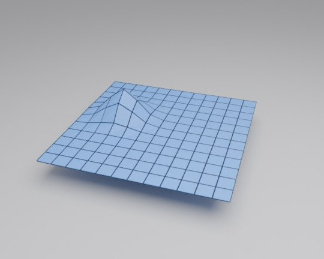
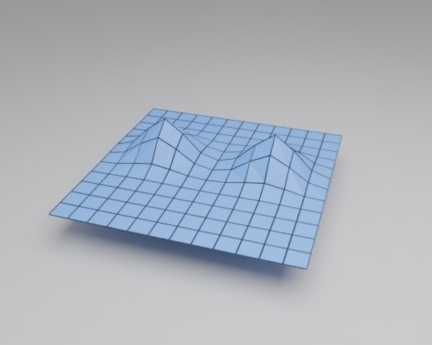

Bonus lesson
Symmetrize
Symmetrize is a quick way to make a mesh symmetrical. It works in Edit Mode. Find it under Mesh › Symmetrize. The manual lists no shortcut for it.


How it works
The manual explains that Symmetrize cuts the mesh at the pivot point of the object, mirrors the geometry over in the axis you choose, and merges the two halves together if they are connected. Mesh data such as UVs, color attributes and vertex weights is copied from one side to the other.
The options
- Direction sets the axis and the direction of the effect. It can be any of the three axes, and either positive to negative or negative to positive.
- Threshold: vertices within this range are snapped to the plane of symmetry.
The manual also points to Mirror, which flips geometry across an axis. See our Mirror lesson for that.
Read the manual page on Symmetrize.
Try it
This exercise is our own suggestion and has not been run step by step in the GUI. Add a plane, enter Edit Mode and subdivide it a few times. Move a few vertices up on the left side only. Select everything and choose Mesh, then Symmetrize. Change the Direction in the tool panel and see which side is copied. Use Ctrl+Z to undo.